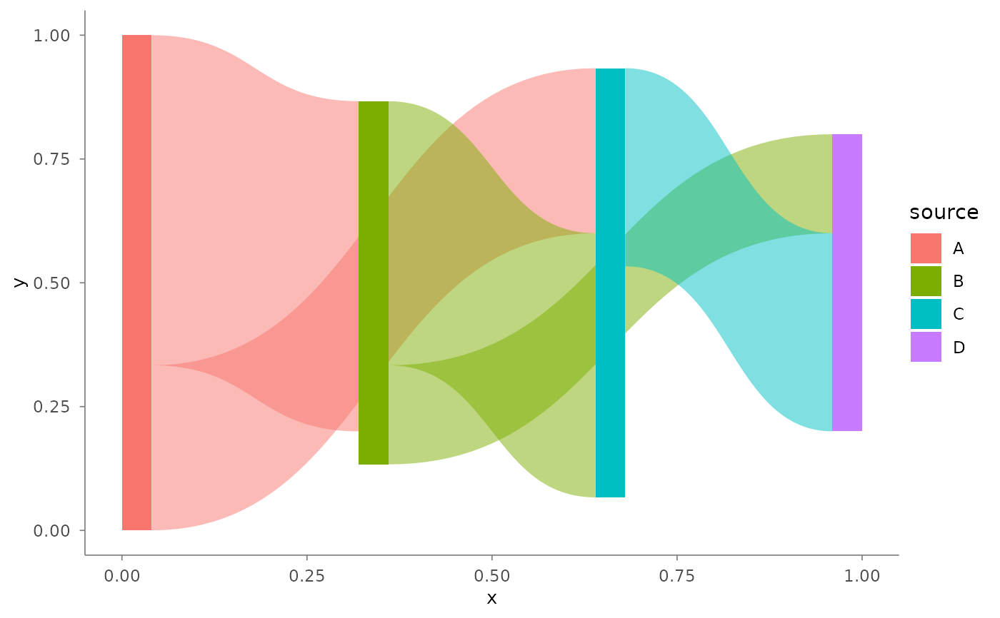

Layered flow layout for DAG edge tables: nodes become rectangles
(xmin/xmax/ymin/ymax, plus xc/yc centers), and each edge
becomes a closed bezier ribbon emitted to a third table named
ribbons in long-form polygon coordinates (x, y, .ribbon_id
plus all original edge attribute columns for fill mapping).
Usage
layout_sankey(
plot,
node_width = 0.04,
padding = 0.02,
curvature = 0.5,
n_points = 50,
max_sweeps = 4L
)Arguments
- plot
A
plotitobject holding graph data, or a bareplotit_graph. The graph must be acyclic.- node_width
Horizontal width of node rectangles (unit-square fraction).
- padding
Vertical gap between nodes in the same layer.
- curvature
Ribbon curvature in
[0, 1];0.5gives symmetric horizontal-tangent beziers.- n_points
Samples per ribbon boundary curve.
- max_sweeps
Barycenter refinement sweeps (deterministic).
Value
A modified plotit object (pipeline form), or a new
plotit_graph with a ribbons table when called on raw graph data.
Details
The layout is fully deterministic: layers follow longest-path depths, refined by barycenter sweeps; no seed is required.
Examples
e <- data.frame(
source = c("A", "A", "B", "B", "C"),
target = c("B", "C", "C", "D", "D"),
value = c(10, 5, 8, 3, 6)
)
g <- as_graph(e) |> layout_sankey()
names(g)
#> [1] "nodes" "edges" "ribbons"
head(g$nodes[, c("id", "xmin", "ymin")])
#> id xmin ymin
#> 1 A 0.00 0.00000000
#> 2 B 0.32 0.13333333
#> 3 C 0.64 0.06666667
#> 4 D 0.96 0.20000000
as_graph(e) |>
plotit() |>
layout_sankey() |>
mark_polygon(
data = ~ribbons,
encode(fill = source, group = .ribbon_id),
alpha = 0.5
) |>
mark_rect(data = ~nodes, encode(fill = id))
